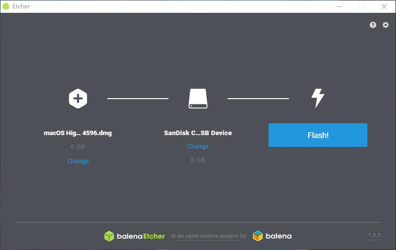
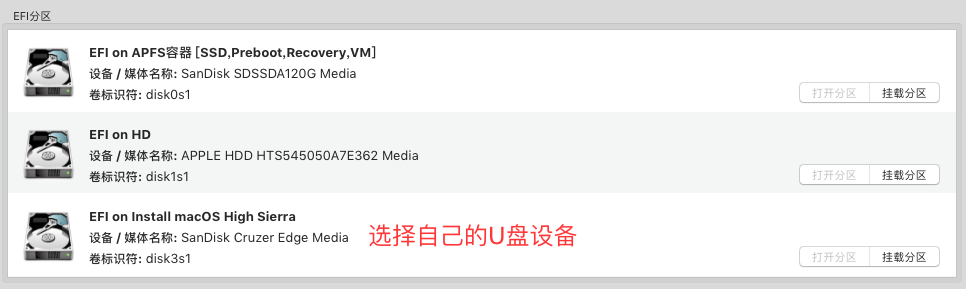
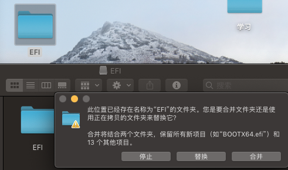
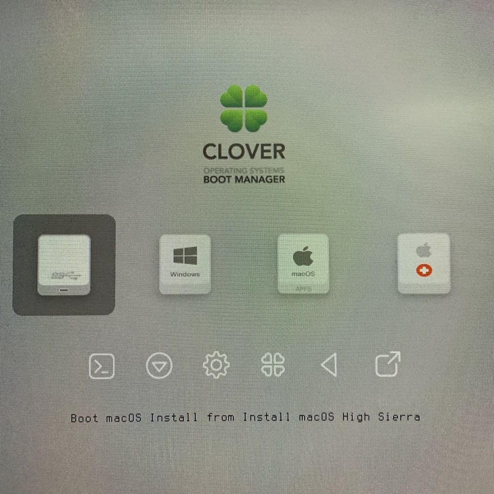
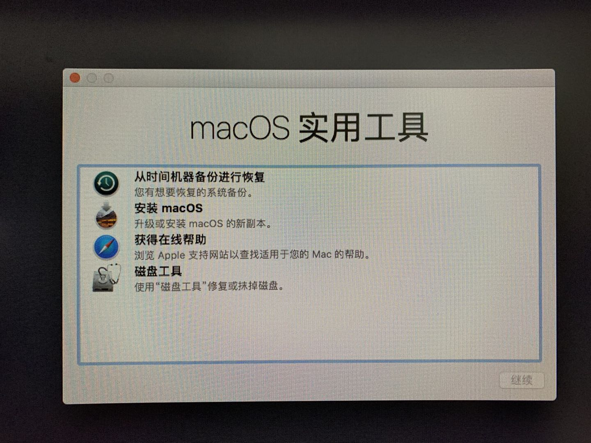
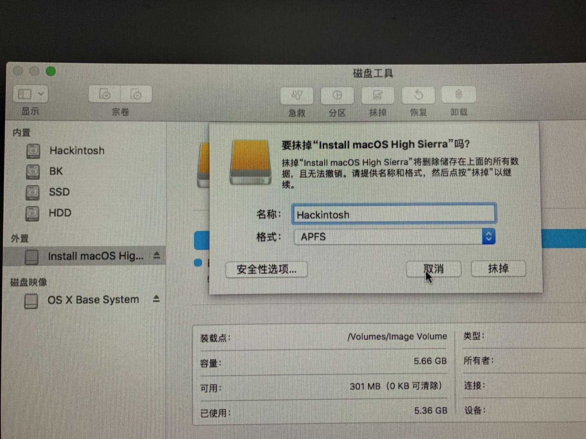
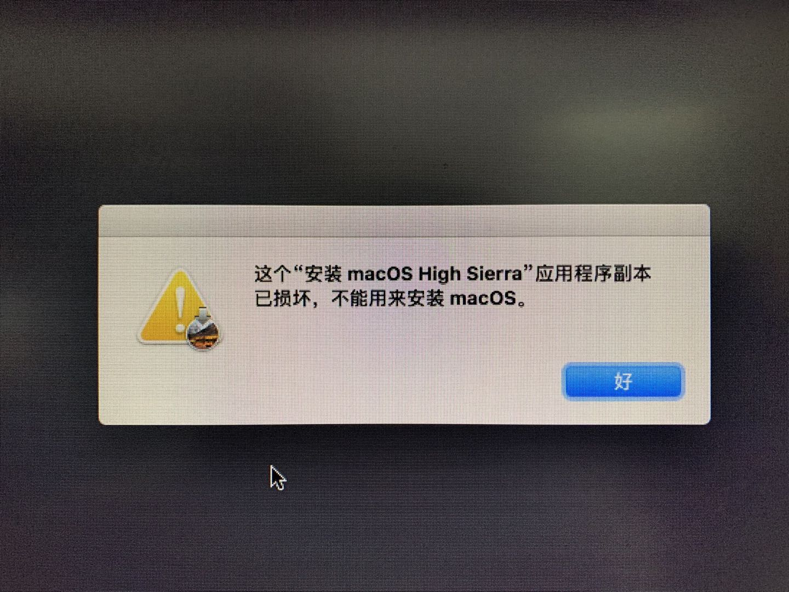
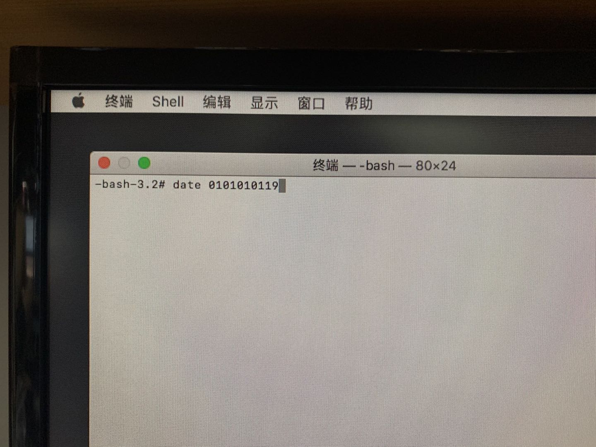
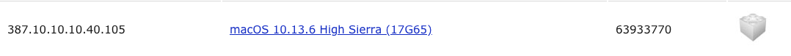
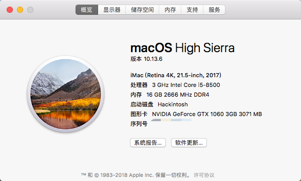

前言
在上一篇的EFI文件准备工作完成之后，我们就可以正式开始装系统了。这篇博客用于记录我的安装过程以及安装过程中遇到的问题和解决方法
制作启动盘
首先我们需要准备一个8GB的U盘、macOS的镜像文件。我的镜像是从黑果小兵处下载的，他提供的镜像中自带了Clover，因此制作启动盘之后我们需要将自带的Clover替换掉
写入镜像
我们使用baleanEtcher制作启动盘，这个软件界面界面简洁，操作也简单，分为3步：选择镜像，选择设备，写入镜像

替换EFI
镜像写入完成之后，我们使用Clover Configurator挂载U盘的EFI分区，然后将其中的EFI文件替换。这样启动盘就制作完成了
挂载EFI分区：

替换EFI文件夹，注意文件夹名字一定要一样：

Bios配置
Bios的配置参数我参考了网上的华硕主板黑苹果设置，如果你的主板没有某一项参数，忽略即可。具体配置如下：
1 | Boot -- Fast Boot -> Disabled |
安装macOS
接下来就是macOS的安装了，开机按F8选择启动盘为U盘，就可以看到如下界面：

选择Boot macOS Install from Install macOS High Sierra，跑了一段代码之后就会进入安装系统的界面：

先打开磁盘工具，将新硬盘格式化为APFS文件系统（这里我用U盘作为示例，自行选择要格式化的硬盘）：

然后返回安装界面，点击安装。如果这时候报错应用程序副本已损坏，不能用来安装macOS：

这是因为证书已经过期，我们需要把系统时间调早一些。首先我们需要断开网络连接，然后左上角找到实用工具，打开终端，然后输入date 0101010119，终端会输出修改后的系统时间。这时候关闭终端，可以继续系统的安装了

安装WebDriver，修改CPU显示型号
系统安装好后，我们需要安装显卡驱动。显卡驱动的安装也是很简单，需要注意的一点就是系统的版本要和驱动的版本对应，否则可能会出现无法驱动导致的开机黑屏问题。在tonymacx86上有对应的列表，找到对应版本的驱动下载安装就好了
我安装的是macOS 10.13.6(17G65)，对应的Web Driver版本是387.10.10.10.40.105

最后一个小地方就是关于本机中，处理器的型号显示为Unknown。这里我参考了国光的博客，将其修改为自己定义的字符串

大功告成！以后负担重的任务就交给Hackintosh，老Macbook Pro就拿来写写博客，享受退休生活！